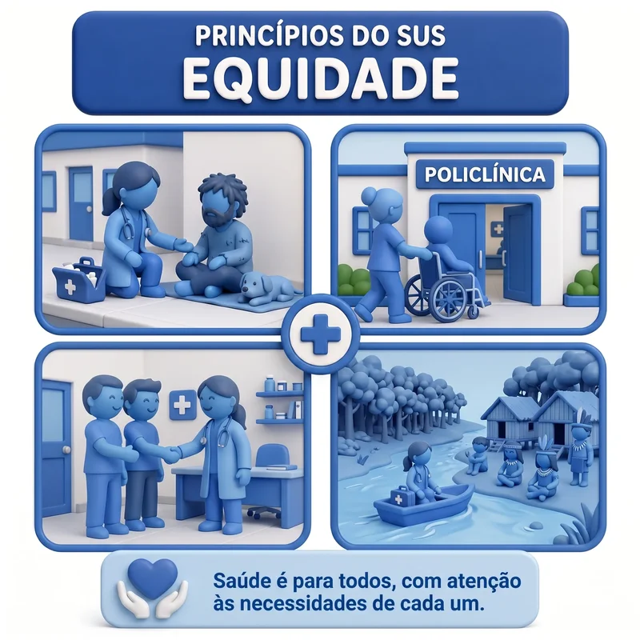
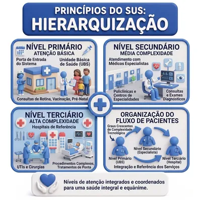

Breve Infográfico dos Princípios do Sistema Único de Saúde
§ 1º O dever do Estado de garantir a saúde consiste na formulação e execução de políticas econômicas e sociais que visem à redução de riscos de doenças e de outros agravos e no estabelecimento de condições que assegurem acesso universal e igualitário às ações e aos serviços para a sua promoção, proteção e recuperação.
§ 2º O dever do Estado não exclui o das pessoas, da família, das empresas e da sociedade.
Princípios Filosóficos e Organizacionais do SUS
Um breve infográfico sobre os fundamentos do Sistema Único de Saúde brasileiro, baseado na Lei 8.080/1990
Universalização
A saúde é um direito de todos e um dever do Estado. O princípio da Universalização garante que qualquer cidadão, independentemente de sua condição social, econômica ou geográfica, tenha acesso às ações e serviços de saúde em todos os níveis de assistência. Ninguém pode ser excluído do sistema. Base legal: Art. 7º, inciso I da Lei 8.080/1990.
Integralidade
O princípio da Integralidade compreende o ser humano como um todo, garantindo ações integradas de promoção, proteção e recuperação da saúde. Significa que o SUS deve oferecer um conjunto articulado e contínuo de ações e serviços preventivos e curativos, individuais e coletivos, em todos os níveis de complexidade. Base legal: Art. 7º, inciso II da Lei 8.080/1990.

Equidade
O princípio da Equidade busca reduzir as desigualdades, garantindo que cada pessoa receba o tratamento conforme sua necessidade. Não se trata de tratar todos igualmente, mas de reconhecer as diferenças e priorizar aqueles que mais precisam, promovendo justiça social no acesso aos serviços de saúde. Base legal: Art. 7º, inciso IV da Lei 8.080/1990 (igualdade da assistência à saúde, sem preconceitos ou privilégios).
Participação da Comunidade
A população tem o direito e o dever de participar da gestão do SUS por meio dos Conselhos de Saúde e Conferências de Saúde. Este princípio garante o controle social sobre as políticas públicas de saúde, assegurando que as decisões sejam tomadas com transparência e com a participação ativa da sociedade civil. Base legal: Art. 7º, inciso VIII e Lei 8.142/1990.
Regionalização
A Regionalização organiza os serviços de saúde em regiões para garantir atendimento adequado às necessidades da população. As ações e serviços de saúde são organizados de forma regionalizada e hierarquizada em níveis de complexidade crescente, permitindo a integração entre municípios, estados e União para otimizar recursos e garantir acesso. Base legal: Art. 8º da Lei 8.080/1990.
Descentralização
A Descentralização político-administrativa redistribui responsabilidades entre as três esferas de governo (União, Estados e Municípios). Com direção única em cada esfera, há ênfase na descentralização dos serviços para os municípios, que ficam mais próximos da população e podem atender melhor às necessidades locais. Base legal: Art. 7º, inciso IX da Lei 8.080/1990.

Hierarquização
O SUS é organizado em níveis de complexidade crescente: Atenção Primária (Unidades Básicas de Saúde), Atenção Secundária (serviços especializados ambulatoriais) e Atenção Terciária (hospitais de alta complexidade). A Hierarquização garante que o paciente seja atendido no nível mais adequado à sua necessidade, com encaminhamento ordenado entre os serviços por meio da regulação assistencial. Base legal: Art. 8º da Lei 8.080/1990.
Lei 8.080/1990
Lei Orgânica da Saúde - Criação do SUS
Referências Bibliográficas
- BRASIL. Lei nº 8.080, de 19 de setembro de 1990. Dispõe sobre as condições para a promoção, proteção e recuperação da saúde, a organização e o funcionamento dos serviços correspondentes e dá outras providências. Brasília: Presidência da República, 1990. Disponível em: https://www.planalto.gov.br/ccivil_03/leis/l8080.htm. Acesso em: 19 maio 2026.
- BRASIL. Ministério da Saúde. Sistema Único de Saúde (SUS). Brasília: Ministério da Saúde, 2025. Disponível em: https://www.gov.br/saude/pt-br/sus. Acesso em: 19 maio 2026.
- BRASIL. Constituição da República Federativa do Brasil de 1988. Art. 196 a 200 - Da Saúde. Brasília: Senado Federal, 1988. Disponível em: https://www.planalto.gov.br/ccivil_03/constituicao/constituicao.htm. Acesso em: 19 maio 2026.
- BRASIL. Lei nº 8.142, de 28 de dezembro de 1990. Dispõe sobre a participação da comunidade na gestão do Sistema Único de Saúde (SUS) e sobre as transferências intergovernamentais de recursos financeiros na área da saúde. Brasília: Presidência da República, 1990. Disponível em: https://www.planalto.gov.br/ccivil_03/leis/l8142.htm. Acesso em: 19 maio 2026.